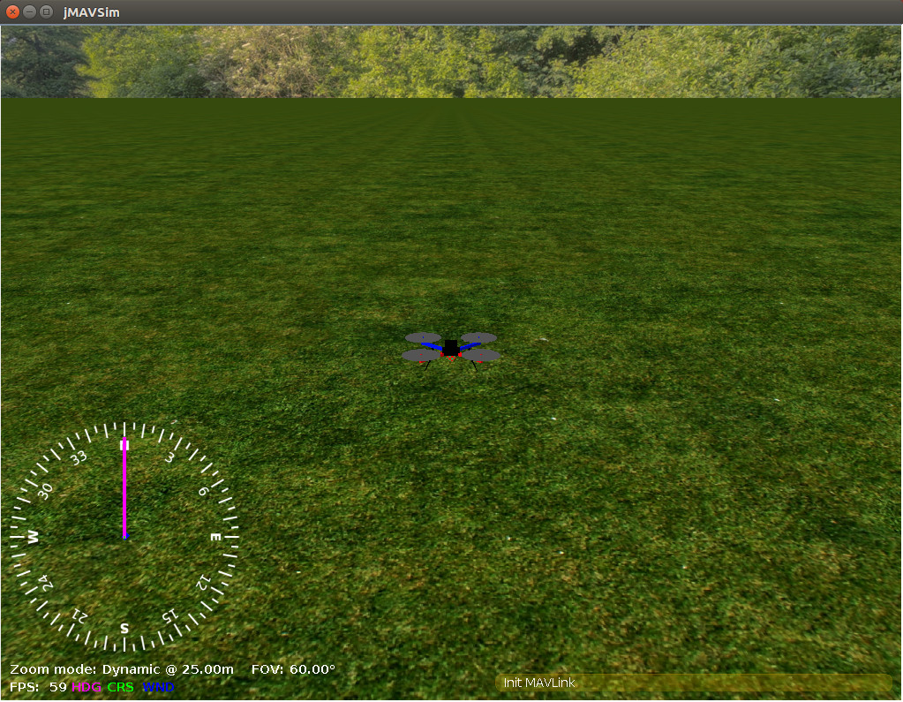

jMAVSim with SITL
jMAVSim is a simple multirotor/Quad simulator that allows you to fly copter type vehicles running PX4 around a simulated world. It is easy to set up and can be used to test that your vehicle can take off, fly, land, and responds appropriately to various fail conditions (e.g. GPS failure).
Supported Vehicles:
- Quad
This topic shows how to set up jMAVSim to connect with a SITL version of PX4.
jMAVSim can also be used for HITL Simulation (as shown here.
Simulation Environment
Software in the Loop Simulation runs the complete system on the host machine and simulates the autopilot. It connects via local network to the simulator. The setup looks like this:
Running SITL
After ensuring that the simulation prerequisites are installed on the system, just launch: The convenience make target will compile the POSIX host build and run the simulation.
make px4_sitl_default jmavsim
This will bring up the PX4 shell:
[init] shell id: 140735313310464
[init] task name: px4
______ __ __ ___
| ___ \ \ \ / / / |
| |_/ / \ V / / /| |
| __/ / \ / /_| |
| | / /^\ \ \___ |
\_| \/ \/ |_/
Ready to fly.
pxh>
It will also bring up a window showing a 3D view of the jMAVSim simulator:

Taking it to the Sky
The system will start printing status information. You will be able to start flying once you have a position lock (shortly after the console displays the message: EKF commencing GPS fusion).
To takeoff enter the following into the console:
pxh> commander takeoff
You can use QGroundControl to fly a mission or to connect to a joystick.
Usage/Configuration Options
Set Custom Takeoff Location
The default takeoff location in can be overridden using the environment variables: PX4_HOME_LAT, PX4_HOME_LON, and PX4_HOME_ALT.
For example, to set the latitude, longitude and altitude:
export PX4_HOME_LAT=28.452386
export PX4_HOME_LON=-13.867138
export PX4_HOME_ALT=28.5
make px4_sitl_default jmavsim
Change Simulation Speed
The simulation speed can be increased or decreased with respect to realtime using the environment variable PX4_SIM_SPEED_FACTOR.
export PX4_SIM_SPEED_FACTOR=2
make px4_sitl_default jmavsim
For more information see: Simulation > Run Simulation Faster than Realtime.
Using a Joystick
Joystick and thumb-joystick support are supported through QGroundControl (setup instructions here).
Simulating a Wifi Drone
There is a special target to simulate a drone connected via Wifi on the local network:
make broadcast jmavsim
The simulator broadcasts its address on the local network as a real drone would do.
Start JMAVSim and PX4 Separately
You can start JMAVSim and PX4 separately:
./Tools/jmavsim_run.sh -l
make px4_sitl none
This allows a faster testing cycle (restarting jMAVSim takes significantly more time).
Headless Mode
To start jMAVSim without the GUI, set the env variable HEADLESS=1 as shown:
HEADLESS=1 make px4_sitl jmavsim
Multi-Vehicle Simulation
JMAVSim can be used for multi-vehicle simulation: Multi-Vehicle Sim with JMAVSim.
Extending and Customizing
To extend or customize the simulation interface, edit the files in the Tools/jMAVSim folder. The code can be accessed through thejMAVSim repository on Github.
The build system enforces the correct submodule to be checked out for all dependencies, including the simulator. It will not overwrite changes in files in the directory, however, when these changes are committed the submodule needs to be registered in the Firmware repo with the new commit hash. To do so,
git add Tools/jMAVSimand commit the change. This will update the GIT hash of the simulator.
Interfacing to ROS
The simulation can be interfaced to ROS the same way as onboard a real vehicle.
Important Files
- The startup script is in the posix-configs/SITL/init folder and named
rcS_SIM_AIRFRAME, the default isrcS_jmavsim_iris. - The simulated root file system ("
/" directory) is created inside the build directory here:build/px4_sitl_default/tmp/rootfs.
Troubleshooting
java.long.NoClassDefFoundError
If you see an error similar to the one below, it's likely that you're using a Java version later than 8:
Exception in thread "main" java.lang.NoClassDefFoundError: javax/vecmath/Tuple3d
at java.base/java.lang.Class.forName0(Native Method)
at java.base/java.lang.Class.forName(Class.java:374)
at org.eclipse.jdt.internal.jarinjarloader.JarRsrcLoader.main(JarRsrcLoader.java:56)
Caused by: java.lang.ClassNotFoundException: javax.vecmath.Tuple3d
at java.base/java.net.URLClassLoader.findClass(URLClassLoader.java:466)
at java.base/java.lang.ClassLoader.loadClass(ClassLoader.java:566)
at java.base/java.lang.ClassLoader.loadClass(ClassLoader.java:499)
... 3 more
Exception in thread "main" java.lang.NoClassDefFoundError: javax/vecmath/Tuple3d
at java.base/java.lang.Class.forName0(Native Method)
at java.base/java.lang.Class.forName(Class.java:374)
at org.eclipse.jdt.internal.jarinjarloader.JarRsrcLoader.main(JarRsrcLoader.java:56)
Caused by: java.lang.ClassNotFoundException: javax.vecmath.Tuple3d
at java.base/java.net.URLClassLoader.findClass(URLClassLoader.java:466)
at java.base/java.lang.ClassLoader.loadClass(ClassLoader.java:566)
at java.base/java.lang.ClassLoader.loadClass(ClassLoader.java:499)
For more info check this GitHub issue.
The solution is to install the Java 8, as shown in the following sections.
Ubuntu:
sudo apt install openjdk-8-jdk
sudo update-alternatives --config java # choose 8
rm -rf Tools/jMAVSim/out
macOS
Either download Oracle Java 8 or use Brew:
brew tap caskroom/versions
brew cask install java8
brew install ant
export JAVA_HOME=$(/usr/libexec/java_home -v 1.8)
rm -rf Tools/jMAVSim/out
java.awt.AWTError: Assistive Technology not found: org.GNOME.Accessibility.AtkWrapper
Exception in thread "main" java.lang.reflect.InvocationTargetException
at sun.reflect.NativeMethodAccessorImpl.invoke0(Native Method)
at sun.reflect.NativeMethodAccessorImpl.invoke(NativeMethodAccessorImpl.java:62)
at sun.reflect.DelegatingMethodAccessorImpl.invoke(DelegatingMethodAccessorImpl.java:43)
at java.lang.reflect.Method.invoke(Method.java:498)
at org.eclipse.jdt.internal.jarinjarloader.JarRsrcLoader.main(JarRsrcLoader.java:58)
Caused by: java.awt.AWTError: Assistive Technology not found: org.GNOME.Accessibility.AtkWrapper
at java.awt.Toolkit.loadAssistiveTechnologies(Toolkit.java:807)
at java.awt.Toolkit.getDefaultToolkit(Toolkit.java:886)
at java.awt.Window.getToolkit(Window.java:1358)
at java.awt.Window.init(Window.java:506)
at java.awt.Window.(Window.java:537)
at java.awt.Frame.(Frame.java:420)
at java.awt.Frame.(Frame.java:385)
at javax.swing.JFrame.(JFrame.java:189)
at me.drton.jmavsim.Visualizer3D.(Visualizer3D.java:104)
at me.drton.jmavsim.Simulator.(Simulator.java:157)
at me.drton.jmavsim.Simulator.main(Simulator.java:678)
If you see this error, try this workaround:
Edit the accessibility.properties file:
sudo gedit /etc/java-8-openjdk/accessibility.properties
and comment out the line indicated below:
#assistive_technologies=org.GNOME.Acessibility.AtkWrapper
For more info check this GitHub issue. The fix was found in askubuntu.com.